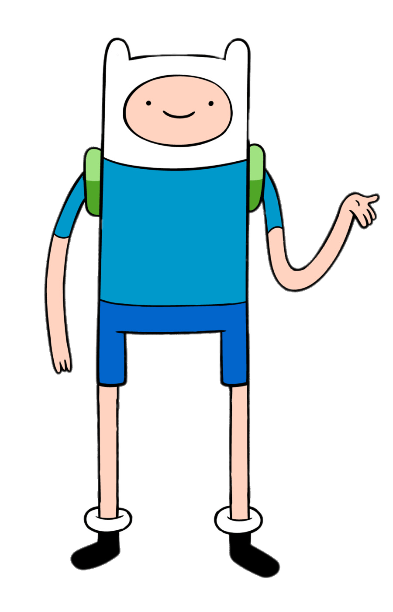

About Princess Bubblegum
Princess Bubblegum is a main character in the series Adventure Time. She is a sentient, humanoid-construct of pink gum. While Princess Bubblegum is typically kind, good-hearted and well-mannered, she can be very temperamental and has shown a malicious aspect of her personality whenever she is crossed.
Quotes
- "This is really, really bad, Finn! You can't break royal promises! Never, ever, never, no matter what, forever!"
- "Finn, what the cabbage?"
- "The deer wanted our sugar, but I didn't give him any... if ya know what I mean. (Winks and clicks teeth)"
- "Welcome to the potluck guys. Jake, you look pretty."
- "Peeps'll never starve in my eternal empire."
Friends
 Finn Jake
Jake
Marceline